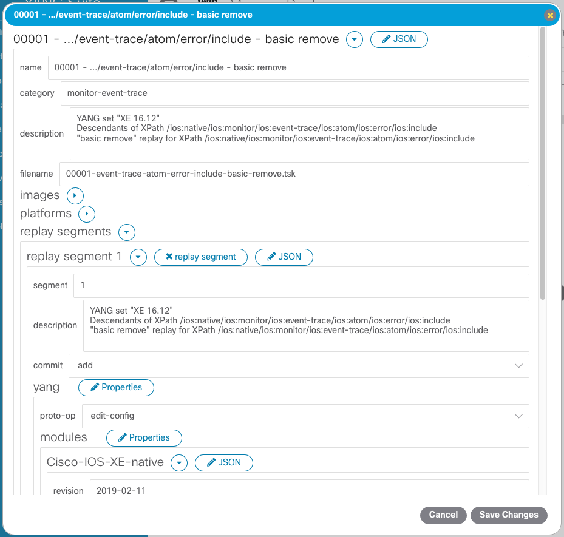
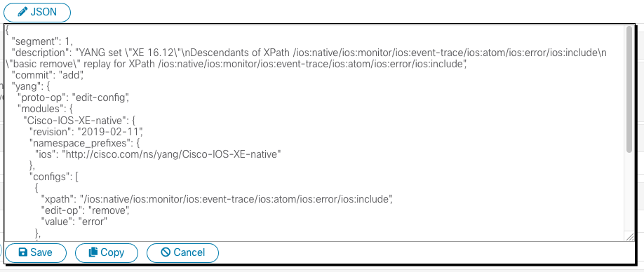

Managing and editing replay files¶
What are replays?¶
In YANG Suite, a “replay” is a file that represents a particular operation or set of operations against a particular YANG data model(s). This could be a NETCONF RPC, a gNMI request, etc.
If you have yangsuite-netconf installed, the documentation specific to
working with NETCONF replays is available here.
Managing replay files¶
Once you have some replays, either generated directly from a YANG model or constructed using a YANG Suite plugin such as yangsuite-netconf, you may find that you need to manage them in some way. Perhaps you want to change which category some replays are stored under, or perhaps you want to delete an entire category of replays that are no longer relevant.
While you can certainly do this from your filesystem (as, fundamentally, categories are simply directories and replays are files within them), YANG Suite also provides a simple GUI for accomplishing certain common tasks.
From any YANG Suite page, select “Operations → Manage replays” to access this GUI.
If your replays are stored somewhere other than YANG Suite’s default data directory, you can use the text box and buttons at the top of the page to set to the appropriate location. The Category and Replays menus will be populated with all available replays in this location.
Viewing and editing replay files¶
On the “Operations → Manage replays” page, you can select a replay category to list all replays in that category. You can then double-click a particular replay (or select it then click the “Show/edit replay contents” button) to open a dialog box displaying the replay’s contents as an HTML form.
You can make any desired changes to the replay here and then click the “Save changes” button to apply them. Alternatively, if you’d rather edit the raw JSON of the replay file rather than using the HTML form (such as, for example, if you want to copy-and-paste replay data to/from elsewhere), you can click any of the “JSON” buttons in this dialog to do so.
